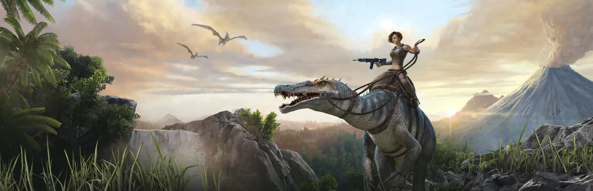

{{c.nombre}}
{{c.nota}}
{{g.number}}{{g.titulo}}{{g.resumen}}{{g.dificultad}}Niv. {{g.nivel}}+{{g.tiempo}}
{{g.resumen}}
- {{p}}

Guías prácticas para montar tu primera base, domesticar con cabeza y crear sistemas que te ahorren viajes. Pasos claros para ARK: Survival Evolved en The Island.
Elige una categoría y abre la guía que necesitas.
{{c.nota}}
{{g.resumen}}